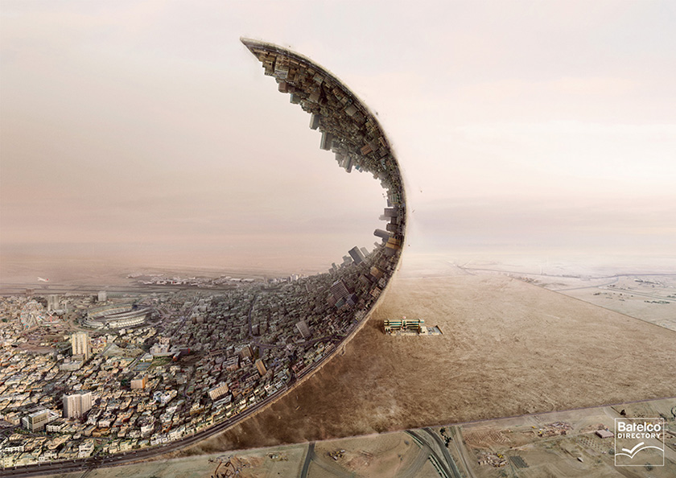
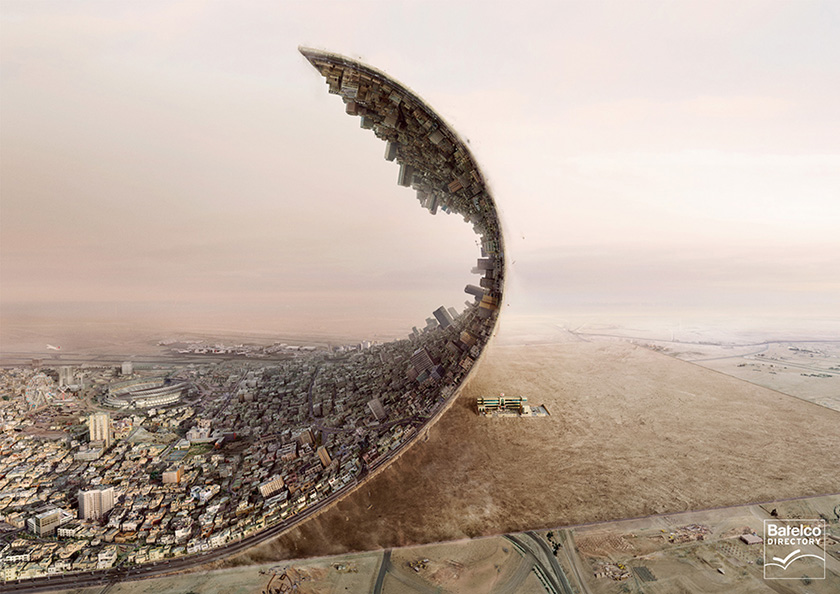

Batelco Directory
Cleaver ad and beautifully executed art direction for Bahrain’s equivalent of the Yellow Pages. Created by Supparat Thepparat. See the Behance project for more process images and full credits .

Cleaver ad and beautifully executed art direction for Bahrain’s equivalent of the Yellow Pages. Created by Supparat Thepparat. See the Behance project for more process images and full credits .